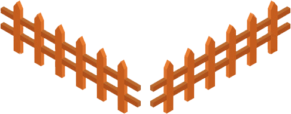

JavaScript na webové stránce
Učím se manipulovat s obsahem stránky. K tomu se používá divná a tajemná věc, které se říká DOM (Document Object Model). Pomocí ní mohu ke všm prvkům na stránce přistupovat jako k objektům a měnit jejich vlastnosti. Jako první chci zvládnout následující úkoly...
Úkoly
- JavaScriptem změnit barvu nadpisu.
- Zvětšit velikost písma odstavce a/nebo ho udělat tučně nebo kurzívou.
- Vyměnit text uvnitř nadpisu nebo odstavce za jiný.
- Vyměnit obrázek kočky za psa. Koček je všude dost, nepotřebujeme tu další.
- Nastav pozici jednorožce Vény tak, aby byl v ohrádce. Neboj, zvířátkům neubližujeme. Jednorožeč je mytická bytost a trest si zaslouží.
- Vytvořit v CSS třídu "aktivni" a přidat ji na čtvereček po kliknutí.

Čtvereček
Dej jednorožce Vénu do ohrádky


Jak to všechno udělám?
- V HTML přidám k elementu atribut id, abych mohla prvek rychle najít JavaScriptem
- V JavaScriptu najdu daný HTML element pomocí document.querySelector("#id") (musíš samozřejmě napsat id, které jsi prvku dala). Vybraný objekt si uložím do proměnné, se kterou budu nadále pracovat
- HTML atributy nalezeného prvku změním pomocí prvek.attribut = "hodnota";
- CSS vlastnosti nalezeného prvku změním pomocí prvek.style.cssVlastnost = "hodnota";
- Vzpomenu si, jak se jmenují CSS vlastnosti pro barvu, písmo, atd. Víceslovné názvy vlastností (ty s pomlčkou) přepíšu v JavaScriptu do tzv. camelCase. Např. z background-color v CSS udělám backgroundColor v JavaScriptu.
- Nezapomeň, že hodnoty všech CSS vlastností se v JavaScriptu nastavují jako text, takže musí být v uvozovkách.
- Pro změnu pozice prvků můžeš použít CSS vlastnosti left a top. Jejich hodnoty musíš nastavovat včetně jednotek. My budeme jako jednotu používat pixely, takže hodnotu můžeš nastavit třeba na "100px"